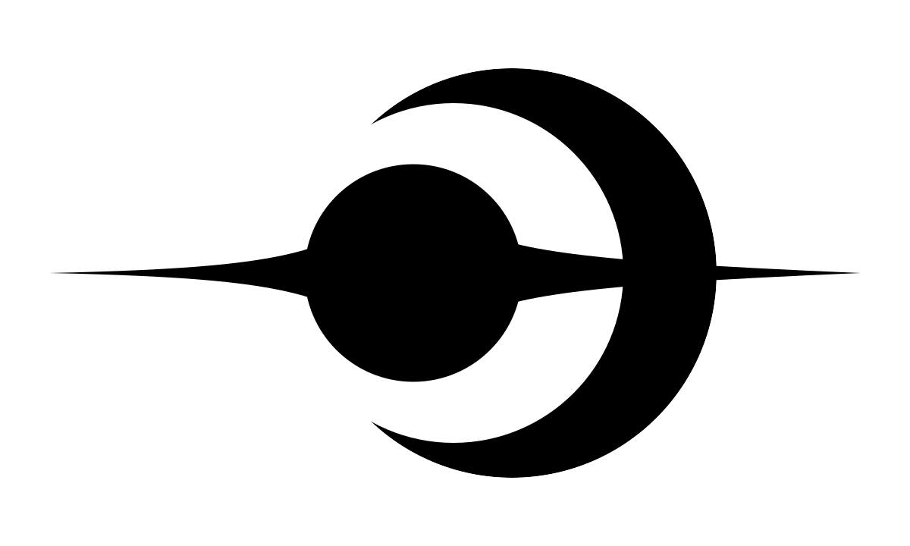

Self-hostable cloud gaming, and the tools around it.
A cloud-gaming platform you run yourself. Stream a GPU host to a browser over WebRTC, on your own hardware. Documentation and install guide.
GitHub Quasar source